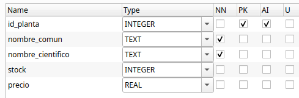

Operaciones sobre la BD¶
En JDBC (Java Database Connectivity), las operaciones sobre la base de datos se realizan utilizando los siguientes objetos y métodos:
-
Connection, establece el canal de comunicación con el SGBD (PostgreSQL, MySQL, etc.)
-
Los objetos PreparedStatement y CreateStatement se utlizan para enviar consultas SQL desde el programa a la base de datos. A continuación se muestra una tabla con el uso de cada uno:
| Si necesitas... | Usa... |
|---|---|
| Consultas sin parámetros | CreateStatement |
| Consultas con datos del usuario | PreparedStatement |
| Seguridad frente a inyecciones SQL | PreparedStatement |
| Ejecutar muchas veces con distintos valores | PreparedStatement |
| Crear tablas o sentencias SQL complejas que no cambian | CreateStatement |
- Los métodos executeQuery(), executeUpdate() y execute() se utilizan para ejecutar sentencias SQL, pero se usan en contextos diferentes. A continuación se muestra una tabla con el uso de cada uno:
| Método | Uso principal | Tipo de sentencia SQL | Resultado que devuelve |
|---|---|---|---|
| executeQuery() | Realizar consultas | SELECT | Objeto ResultSet con el resultado de la consulta SQL. Permite recorrer fila a fila el conjunto de resultados, accediendo a cada campo por nombre o por posición |
| executeUpdate() | Realizar modificaciones | INSERT, UPDATE, DELETE, DDL (CREATE, DROP, etc.) | Entero con el número de filas afectadas |
| execute() | No se sabe de antemano qué tipo de sentencia SQL se va a ejecutar (consulta o modificación) | Sentencias SQL que pueden devolver varios resultados | Booleano true si el resultado es un ResultSet (SELECT) y false si el resultado es un entero (INSERT, UPDATE, DELETE,CREATE, ALTER) |
Buenas prácticas
Liberación de recursos
Cuando una aplicación accede a una base de datos, abre varios recursos internos que consumen memoria y conexiones activas en el sistema:
- La conexión con el servidor de base de datos (Connection).
- Las sentencias SQL preparadas (Statement o PreparedStatement).
- El resultado de la consulta (ResultSet).
Estos recursos no se liberan automáticamente cuando se termina su uso (especialmente en Java o Kotlin con JDBC). Si no se cierran correctamente, se pueden producir problemas como:
- Fugas de memoria.
- Bloqueo de conexiones (demasiadas conexiones abiertas).
- Degradación del rendimiento.
- Errores inesperados en la aplicación.
Para liberar estos recursos hay dos opciones:
1. Utilización de .use { ... }
Se recomienda utilizarlo si:
-
Estás trabajando con un recurso que implementa AutoCloseable (Connection, Statement, ResultSet, File, etc.).
-
Solo necesitas abrir, usar y cerrar el recurso de forma automática.
-
No necesitas lógica compleja de manejo de excepciones dentro del mismo bloque.
Ventajas:
-
Código más limpio y legible.
-
Cierra automáticamente el recurso aunque ocurra una excepción.
-
Evita errores de olvidar close().
2. Usar try–catch–finally manual
Cuándo:
-
No estás en Kotlin o no puedes usar .use.
-
Necesitas capturar y manejar excepciones dentro del mismo método.
-
Necesitas lógica extra antes o después de cerrar el recurso (por ejemplo, reintentos, logging detallado, liberar múltiples recursos en un orden específico).
-
Estás trabajando en un proyecto que sigue un estilo más clásico de Java.
Ejemplo 3: Utilización de .use
A continuación se muestra un ejemplo con .use (sin necesidad de closeConnection) que utiliza la función getConnection declarada en FlorabotanicaBD.kt para abrir la conexión de forma que:
-
conn.use { ... } cierra la conexión automáticamente al final del bloque.
-
stmt.use { ... } cierra el Statement automáticamente.
-
ResultSet se cierra cuando cierras el Statement.
fun main() {
FlorabotanicaBD.getConnection()?.use { conn ->
println("Conectado a la BD")
conn.createStatement().use { stmt ->
val rs = stmt.executeQuery("SELECT * FROM plantas")
while (rs.next()) {
println("${rs.getString("nombre_comun")}")
}
}
} ?: println("No se pudo conectar")
}
Realiza lo siguiente
Prueba el código de ejemplo y verifica que funciona correctemente.
Ejemplo 4: Utilización de close()
Si no utilizas use {} en Kotlin, entonces debes cerrar manualmente cada uno de los recursos abiertos (ResultSet, Statement y Connection) utilizando close(), y normalmente deberías hacerlo dentro de un bloque finally para garantizar su cierre incluso si ocurre un error. El orden correcto de cierre es del más interno al más externo. A continuación tienes un ejemplo equivalente al ejemplo anterior pero sin utilizar .use:
import java.sql.Connection
import java.sql.Statement
import java.sql.ResultSet
fun main() {
var conn: Connection? = null
var stmt: Statement? = null
var rs: ResultSet? = null
try {
conn = FlorabotanicaBD.getConnection()
if (conn != null) {
println("Conectado a la BD")
stmt = conn.createStatement()
rs = stmt.executeQuery("SELECT * FROM plantas")
while (rs.next()) {
println("${rs.getString("nombre_comun")}")
}
} else {
println("No se pudo conectar")
}
} catch (e: Exception) {
e.printStackTrace()
} finally {
try {
rs?.close()
stmt?.close()
conn?.close()
println("Conexión cerrada correctamente")
} catch (e: Exception) {
println("Error al cerrar los recursos: ${e.message}")
}
}
}
Realiza lo siguiente
Prueba el código de ejemplo y verifica que funciona correctemente.
Objetos de acceso a datos (DAO) Otra buena práctica es crear un objeto para manejar las diferentes operaciones CRUD de acceso a los datos. Es el Data Access Object (DAO) y algunas de las ventajas de utilizar estos objetos son las siguientes:
- Organización: todo el código SQL está en un único lugar.
- Reutilización: puedes llamar a PlantasDAO.listarPlantas() desde distintos sitios sin repetir la consulta.
- Mantenibilidad: si cambia la base de datos, solo tocas el DAO.
- Claridad: el resto de tu app se lee mucho más limpio, sin SQL mezclado.
Ejemplo 5: DAO en SQlite
El siguiente ejemplo es el DAO para la tabla plantas de la BD florabotanica.sqlite en la que se utiliza el código de conexión del objeto FlorabotanicaBD.kt. La estructura de la tabla plantas es la siguiente:

Se utiliza un data class con la misma estructura que la tabla plantas y su código se guarda en el archivo Planta.kt:
data class Planta(
val id_planta: Int? = null, // lo genera SQLite automáticamente
val nombreComun: String,
val nombreCientifico: String,
val stock: Int,
val precio: Double
)
También se declaran funciones para leer la información de la tabla, añdir registros nuevos, modificar la información existenete y borrarla. El código se escribe en el archivo PlantasDAO.kt y es el siguiente:
object PlantasDAO {
fun listarPlantas(): List<Planta> {
val lista = mutableListOf<Planta>()
FlorabotanicaBD.getConnection()?.use { conn ->
conn.createStatement().use { stmt ->
val rs = stmt.executeQuery("SELECT * FROM plantas")
while (rs.next()) {
lista.add(
Planta(
id_planta = rs.getInt("id_planta"),
nombreComun = rs.getString("nombre_comun"),
nombreCientifico = rs.getString("nombre_cientifico"),
stock = rs.getInt("stock"),
precio = rs.getDouble("precio")
)
)
}
}
} ?: println("No se pudo establecer la conexión.")
return lista
}
// Consultar planta por ID
fun consultarPlantaPorId(id: Int): Planta? {
var planta: Planta? = null
FlorabotanicaBD.getConnection()?.use { conn ->
conn.prepareStatement("SELECT * FROM plantas WHERE id_planta = ?").use { pstmt ->
pstmt.setInt(1, id)
val rs = pstmt.executeQuery()
if (rs.next()) {
planta = Planta(
id_planta = rs.getInt("id_planta"),
nombreComun = rs.getString("nombre_comun"),
nombreCientifico = rs.getString("nombre_cientifico"),
stock = rs.getInt("stock"),
precio = rs.getDouble("precio")
)
}
}
} ?: println("No se pudo establecer la conexión.")
return planta
}
fun insertarPlanta(planta: Planta) {
FlorabotanicaBD.getConnection()?.use { conn ->
conn.prepareStatement(
"INSERT INTO plantas(nombre_comun, nombre_cientifico, stock, precio) VALUES (?, ?, ?, ?)"
).use { pstmt ->
pstmt.setString(1, planta.nombreComun)
pstmt.setString(2, planta.nombreCientifico)
pstmt.setInt(3, planta.stock)
pstmt.setDouble(4, planta.precio)
pstmt.executeUpdate()
println("Planta '${planta.nombreComun}' insertada con éxito.")
}
} ?: println("No se pudo establecer la conexión.")
}
fun actualizarPlanta(planta: Planta) {
if (planta.id_planta == null) {
println("No se puede actualizar una planta sin id.")
return
}
FlorabotanicaBD.getConnection()?.use { conn ->
conn.prepareStatement(
"UPDATE plantas SET nombre_comun = ?, nombre_cientifico = ?, stock = ?, precio = ? WHERE id_planta = ?"
).use { pstmt ->
pstmt.setString(1, planta.nombreComun)
pstmt.setString(2, planta.nombreCientifico)
pstmt.setInt(3, planta.stock)
pstmt.setDouble(4, planta.precio)
pstmt.setInt(5, planta.id_planta)
val filas = pstmt.executeUpdate()
if (filas > 0) {
println("Planta con id=${planta.id_planta} actualizada con éxito.")
} else {
println("No se encontró ninguna planta con id=${planta.id_planta}.")
}
}
} ?: println("No se pudo establecer la conexión.")
}
fun eliminarPlanta(id: Int) {
FlorabotanicaBD.getConnection()?.use { conn ->
conn.prepareStatement("DELETE FROM plantas WHERE id_planta = ?").use { pstmt ->
pstmt.setInt(1, id)
val filas = pstmt.executeUpdate()
if (filas > 0) {
println("Planta con id=$id eliminada correctamente.")
} else {
println("No se encontró ninguna planta con id=$id.")
}
}
} ?: println("No se pudo establecer la conexión.")
}
}
La llamada a estas funciones desde main.kt podría ser:
fun main() {
// Listar todas las plantas
println("Lista de plantas:")
PlantasDAO.listarPlantas().forEach {
println(" - [${it.id_planta}] ${it.nombreComun} (${it.nombreCientifico}), stock ${it.stock} unidades, precio: ${it.precio} €")
}
// Consultar planta por ID
val planta = PlantasDAO.consultarPlantaPorId(3)
if (planta != null) {
println("Planta encontrada: [${planta.id_planta}] ${planta.nombreComun} (${planta.nombreCientifico}), stock ${planta.stock} unidades, precio: ${planta.precio} €")
} else {
println("No se encontró ninguna planta con ese ID.")
}
// Insertar plantas
PlantasDAO.insertarPlanta(
Planta(
nombreComun = "Palmera",
nombreCientifico = "Arecaceae",
stock = 2,
precio = 50.5
)
)
// Actualizar planta con id=1
PlantasDAO.actualizarPlanta(
Planta(
id_planta = 1,
nombreComun = "Aloe Arborescens",
nombreCientifico = "Aloe barbadensis miller",
stock = 20,
precio = 5.8
)
)
// Eliminar planta con id=2
PlantasDAO.eliminarPlanta(2)
}
Realiza lo siguiente
Prueba el código de ejemplo y verifica que funciona correctemente.
Práctica 4: Trabaja con tu base de datos
Replica el ejemplo anterior para que funcione con tu base de datos.